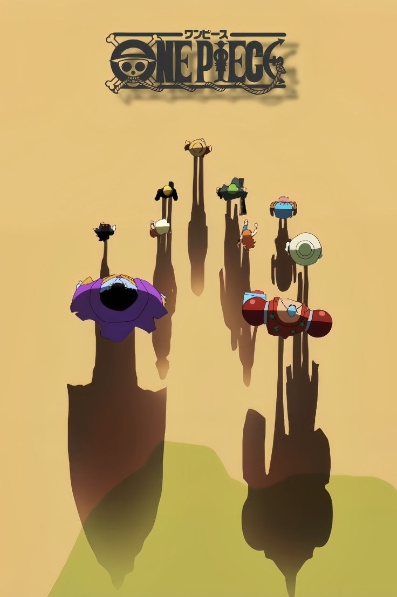
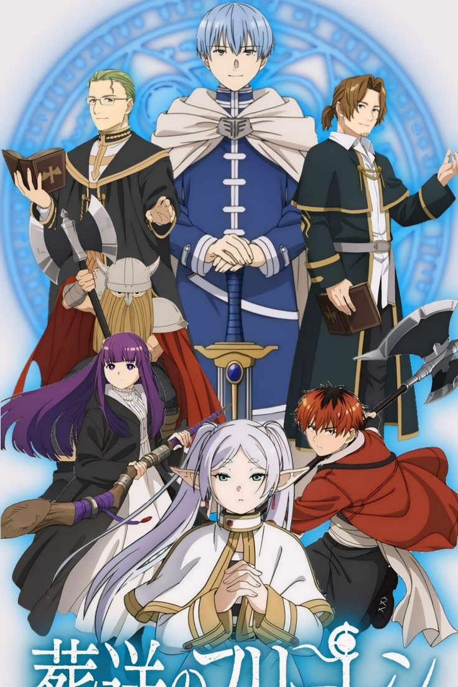
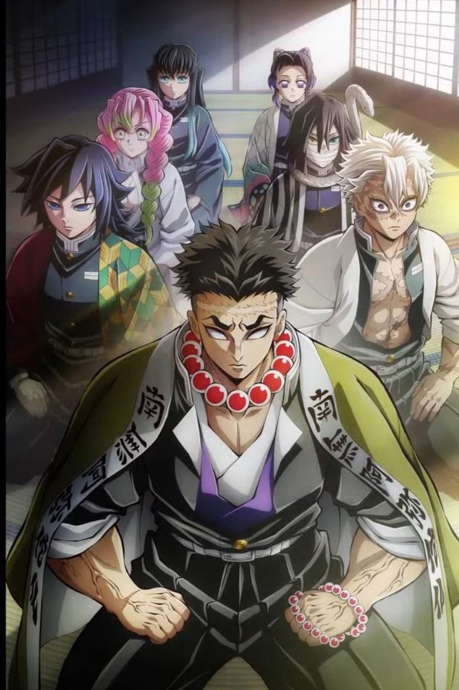
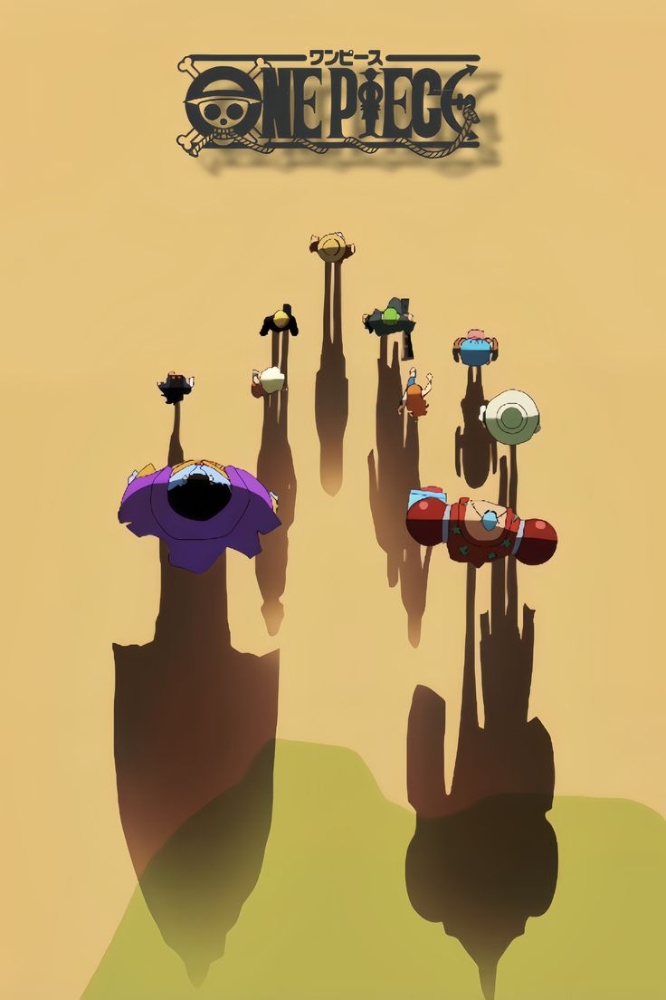
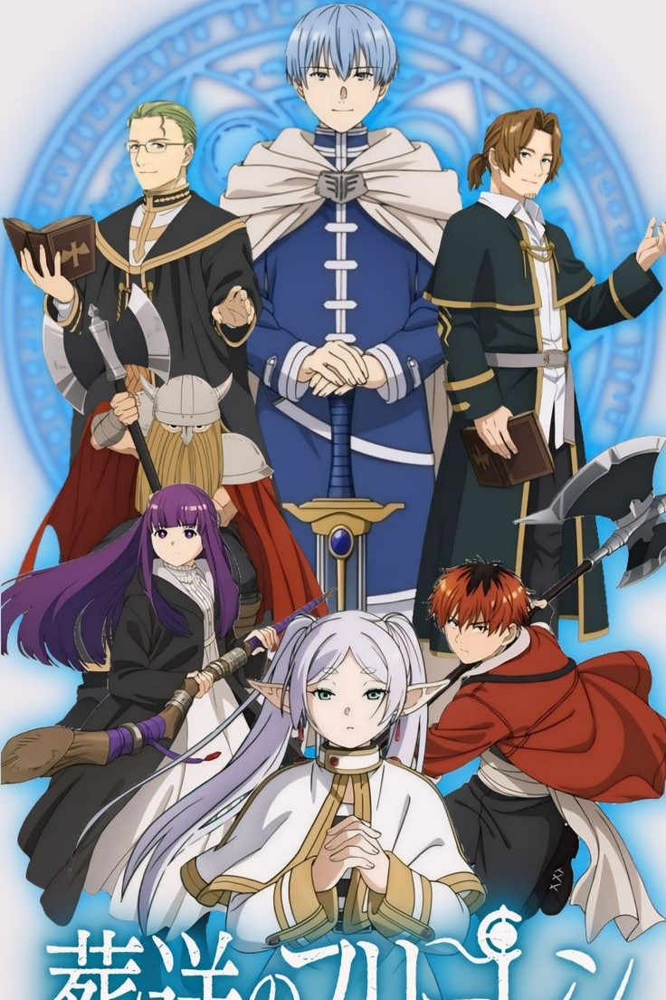
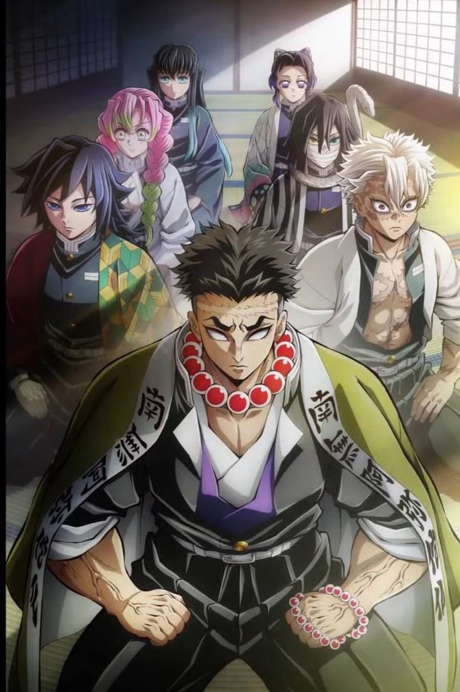
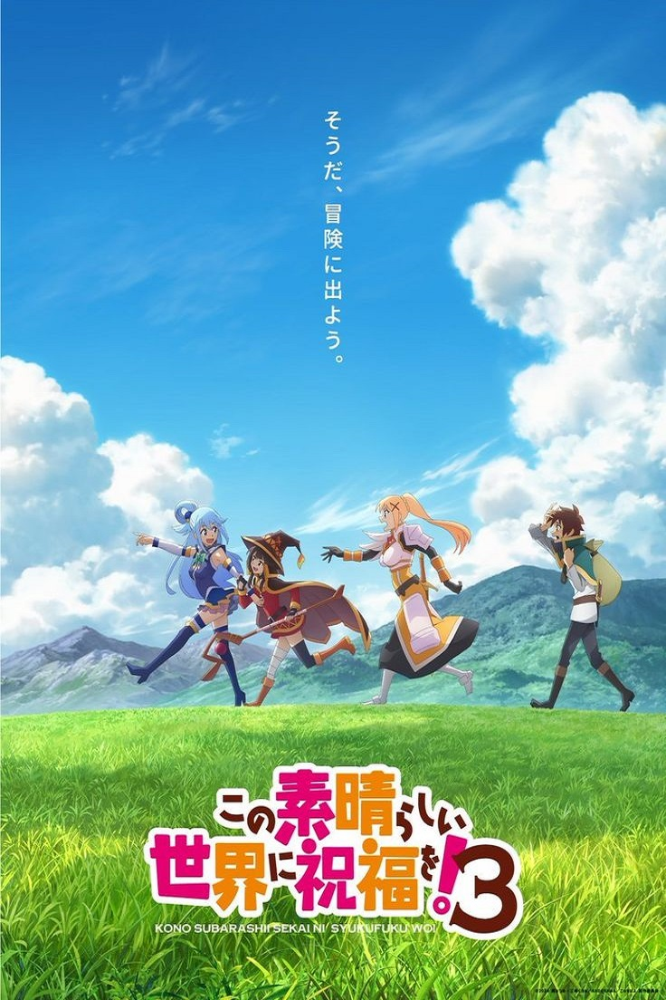
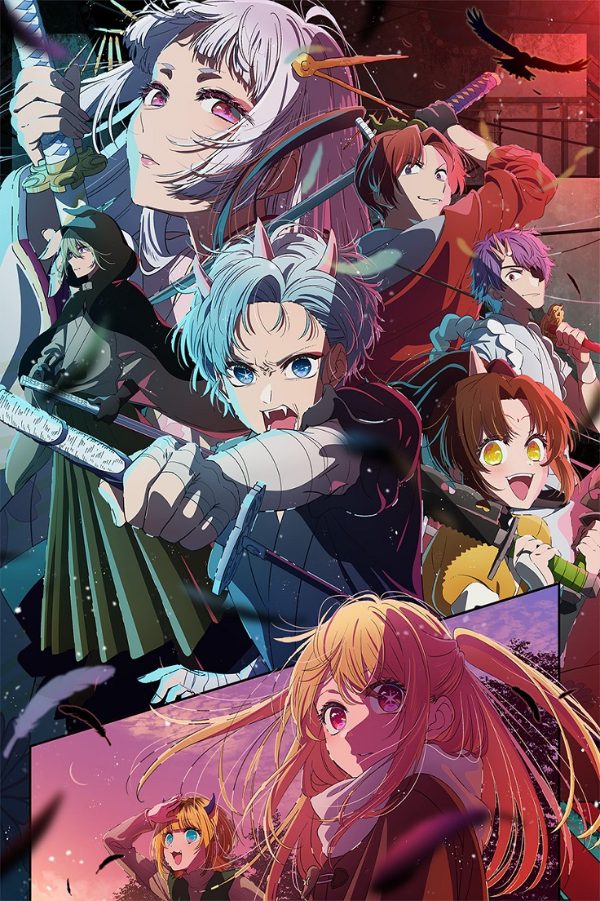
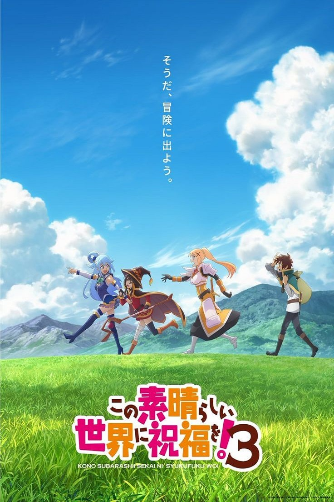
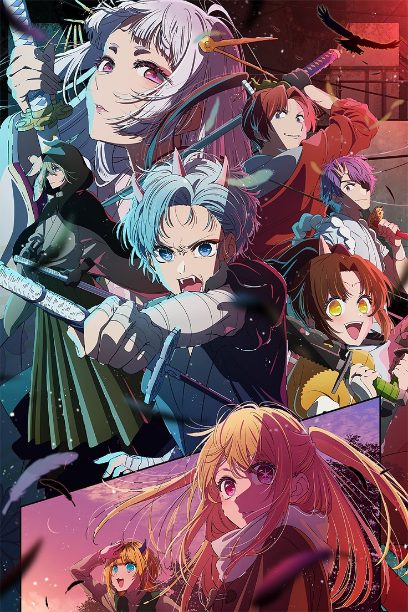

14+ | Sub | Dob
2B es una unidad que participa en una misión que tristemente sale mal y eliminan a todo su equipo. Ella intenta seguir con su misión, donde conoce a 9S.
COMENZAR A VER E112+ | Sub | Dob
La historia sigue a Monkey D. Luffy y su tripulación en su búsqueda del tesoro supremo, el One Piece, para convertirse en el Rey de los Piratas.
COMENZAR A VER E112+ | Sub | Dob
La historia sigue a Frieren, una elfa que ha vivido durante milenios, mientras reflexiona sobre su vida y los amigos que ha perdido.
COMENZAR A VER E116+ | Sub | Dob
Tanjiro Kamado se convierte en cazador de demonios para vengar a su familia y curar a su hermana Nezuko, que se ha convertido en un demonio.
COMENZAR A VER E1 






 


